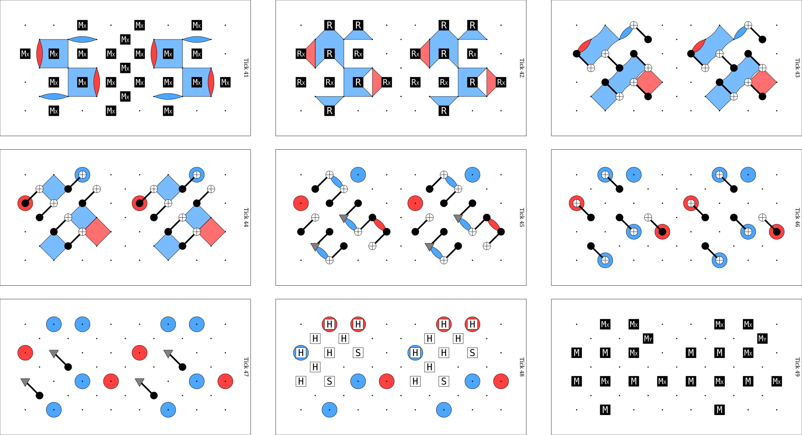
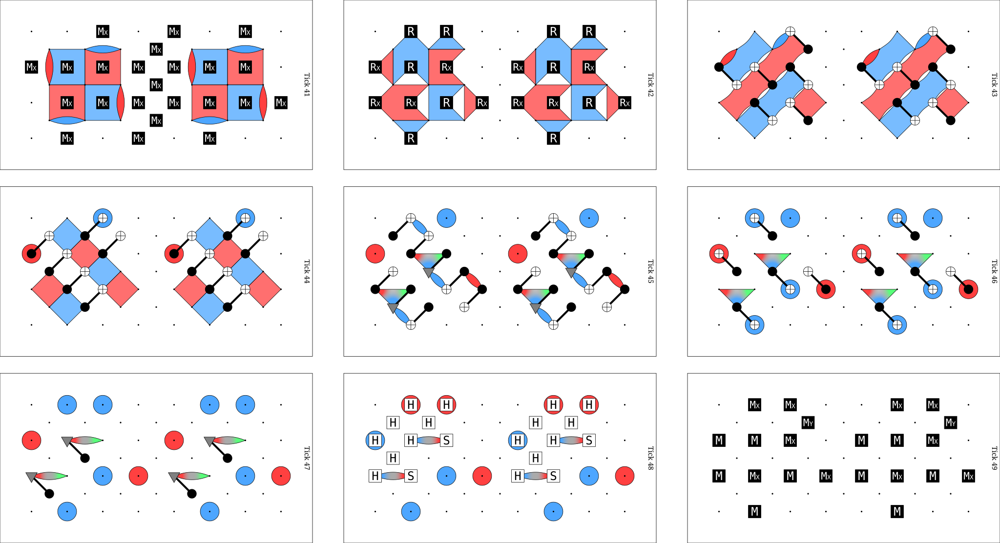

How detectors are found#
A detector is a set of measurements whose combined parity is deterministic when the
circuit has no noise. annotate_detectors_automatically()
finds detectors by flow matching and adds one DETECTOR instruction for each. It
does not add OBSERVABLE_INCLUDE instructions. This page uses the terms of
Automatic detector finding: fragments, flows, collapsing operations and boundary stabilizers.
Why detector annotation matters#
stim [Gidney2021] uses the DETECTOR and OBSERVABLE_INCLUDE instructions of
a noisy circuit to build a detector error model (DEM). For each fault, the DEM gives its
probability, the detectors that it triggers and the observables that it flips
[Rennela2026]. A decoder takes the DEM as input and assumes that it is correct
[Rennela2026]. Thus the annotation sets what the decoder can see:
A detector that is not deterministic is not valid. By default,
stimdoes not build a DEM from a circuit that contains one.A missing detector does not stop the DEM build, but a fault whose only detector is missing triggers no detector at all. Such a fault is not detected, and the distance of the annotated circuit can decrease. Y-basis transition round shows an example.
Commuting and anticommuting flows#
Each flow is stored as a BoundaryStabilizer. Its Pauli
string is the stabilizer at one boundary of a fragment, before the collapsing operations
of that boundary.
A creation flow starts at a reset of the fragment and propagates forward. Its collapsing operations are the measurements of the fragment.
A destruction flow starts at a measurement of the fragment and propagates backward. Its collapsing operations are the resets of the fragment.
A flow commutes when its Pauli string commutes with each of its collapsing operations.
Then the collapse is defined: the Pauli string without the qubits of the collapsing
operations (BoundaryStabilizer.after_collapse) is the part of the flow that crosses
the boundary. A flow anticommutes when its Pauli string anticommutes with at least one
collapsing operation (BoundaryStabilizer.has_anticommuting_operations). For example,
a creation flow Z0 that meets an MX 0 or an MY 0 measurement anticommutes.
That measurement removes Z0 from the stabilizers of the state, so the flow alone
cannot cross the boundary. A product of anticommuting flows can commute with every
collapsing operation, and that product crosses the boundary.
Covers#
A cover of a Pauli string target by a list of Pauli strings sources is a list
of indices into sources. Pauli strings in tqecd have no sign, so all products on
this page ignore the sign. The functions in tqecd.cover return two kinds of
cover.
An exact cover (
find_exact_cover()): the product of the selected sources equalstargeton every qubit.A commuting cover (
find_commuting_cover_on_target_qubits()): on every qubit wheretargetis not the identity, the product of the selected sources commutes with the Pauli oftargeton that qubit. On the other qubits, the product can be any Pauli.
In flow matching (step 3a below), the target of a commuting cover is the product of
the collapsing operations of a boundary. These operations act on one qubit each, so the
product of a commuting cover commutes with every collapsing operation. Both functions
encode each source as a bit vector and solve a linear system over GF(2). For an exact
cover, the vector holds the X and Z bits of each qubit. For a commuting cover,
it holds one bit per qubit of target, set when the source anticommutes with
target on that qubit.
Flow matching#
Flow matching runs these steps in order.
The flows of every fragment are built.
Inside each fragment, a non-trivial commuting flow whose Pauli string is the identity after the collapse gives a detector directly, without any cover search.
Each pair of adjacent fragments goes through
match_boundary_stabilizers(). AREPEATblock counts as one unit in the pairing. Its destruction flows are those of its first body fragment and its creation flows are those of its last.The anticommuting flows are merged into commuting flows. The merge runs on four lists separately: the creation flows and the destruction flows of each of the two fragments. All anticommuting flows of one list must have the same collapsing operations. The merge finds a commuting cover of the product of these operations by the Pauli strings of the anticommuting flows of the list (Minimal commuting cover). It replaces the flows of the cover by one flow (
BoundaryStabilizer.merge). The Pauli string of this flow is the product of their Pauli strings. For creation flows, the merged flow keeps all their resets and only the measurements on qubits where the product is not the identity. For destruction flows, it keeps all their measurements and only the resets on qubits where the product is not the identity. The merge repeats until no commuting cover is left.A creation flow of the left fragment is matched one-to-one with a destruction flow of the right fragment when they are equal after the collapsing operations. The two flows give one detector. Anticommuting flows are skipped.
The remaining flows are matched by an exact cover in both directions. Left creation flows are covered by right destruction flows, then right destruction flows by left creation flows. This step is skipped when either side has no flow left, or when both sides have exactly one: the code expects no cover in these cases. The measurements of the detector are the union of the target’s measurements and the symmetric difference of the cover’s measurements.
Minimal commuting cover#
The merge of step 3a uses
find_commuting_cover_on_target_qubits(), which returns a commuting
cover with the fewest sources when its search is exact (see below). A larger cover also
merges flows that are not needed. Those flows are then not available to other
detectors, so detectors can be lost.
Y-basis transition round shows a circuit where the minimal cover restores four
detectors and the shortest graphlike error grows from length 1 to length 3.
Take collapsing operations Y0*Y1*Y2 and four anticommuting flows.
import stim
from tqecd.cover import find_commuting_cover_on_target_qubits
from tqecd.pauli import PauliString, pauli_product
def pauli(text: str) -> PauliString:
return PauliString.from_stim_pauli_string(stim.PauliString(text))
target = pauli("YYY")
sources = [pauli("_XZ"), pauli("Z__"), pauli("ZZZ"), pauli("ZXZ")]
cover = find_commuting_cover_on_target_qubits(target, sources)
print(cover)
print(pauli_product([sources[i] for i in cover]))
[2, 3]
Y1
Z0*Z1*Z2 and Z0*X1*Z2 both anticommute with Y0*Y1*Y2 on all three qubits,
and their product Y1 commutes with it. With tqecd 0.2.1 from PyPI, the same
code prints [0, 1, 2], a cover of three flows. The search is exact when the null
space of the anticommutation vectors has at most 22 dimensions. Above that size, a
heuristic returns a cover that is not always the smallest. See
find_commuting_cover_on_target_qubits() for the search steps and
their limits.
Y-basis transition round#
A Y half cube uses the in-place Y-basis construction of Gidney [Gidney2024]. A single transition round changes the boundaries of the patch from XZXZ to XXZZ. This maps the Y observable to the product of all the X-basis stabilizers of the XXZZ patch [Gidney2024], and the stabilizer rounds after it measure that product again. The paper states:
By repeatedly measuring the stabilizers of the patch, you learn this product to arbitrarily high certainty… it’s sufficient to measure these stabilizers d/2 times.
The circuits of the paper are in its data record [GidneyData2022]. The transition round
contains CY gates, S gates and MY measurements. Near this round, some flows
anticommute with their collapsing operations, for example with the MY measurements,
and tqecd merges them with commuting covers.
tqecd pull request #74 compares the detectors of a Y half cube initialization with and without the minimal commuting cover.
The two figures show the detecting regions of the s_gate_x circuit of tqec
(fixed bulk convention; the tqec commit is not recorded) at k=1
(circuit) in ticks 42 to
49, the transition round. stim draws a region red when it holds only
X, blue when it holds only Z, and gray when it holds more than one Pauli type.

tqecd 0.2.1: 126 detectors. The shortest graphlike error has length 1.#

tqecd with the minimal commuting cover: 130 detectors. The shortest graphlike
error has length 3. The four new regions are red in ticks 42 to 45 and gray in ticks
46 to 49, where they hold X, Y and Z on different qubits.#
The circuit file already contains noise with probability 0.001: X_ERROR or
Z_ERROR on each reset and measurement, DEPOLARIZE1 after each single-qubit gate
and DEPOLARIZE2 after each two-qubit gate. The shortest graphlike error is an upper
bound on the circuit distance. To reproduce the numbers in the captions, run this code
from the repository root:
import stim
from tqecd import annotate_detectors_automatically
circuit = annotate_detectors_automatically(
stim.Circuit.from_file("docs/media/detectors/s_gate_x_k1_no_detectors.stim")
)
error = circuit.shortest_graphlike_error(ignore_ungraphlike_errors=False)
print(circuit.num_detectors, len(error))
Unrolled fallback#
A detector placed inside a REPEAT body must be valid for every iteration. When a
loop repeats more than once, the matcher checks that the detectors found across the
loop’s back edge (last body fragment to first body fragment) equal those found at the
loop’s entry (the fragment before the loop to the first body fragment). It raises
TQECDException otherwise. When a TQECDException is raised on a circuit that
contains a loop, the circuit is unrolled and the same flow matching is run on it.
Unrolling expands every REPEAT block and inserts a TICK where one is
missing, at the boundaries between loop copies and between a loop and its neighbouring
instructions. The result has no REPEAT block, so its size grows with the number of
repetitions. If the unrolled circuit does not satisfy the input requirements, the
original exception is re-raised.
References#
C. Gidney, “Inplace Access to the Surface Code Y Basis”, Quantum 8, 1310 (2024). https://doi.org/10.22331/q-2024-04-08-1310, arXiv:2302.07395.
C. Gidney, Data for “Inplace Access to the Surface Code Y Basis”, Zenodo (2022). https://doi.org/10.5281/zenodo.7487893
C. Gidney, “Stim: a fast stabilizer circuit simulator”, Quantum 5, 497 (2021). https://doi.org/10.22331/q-2021-07-06-497, arXiv:2103.02202.